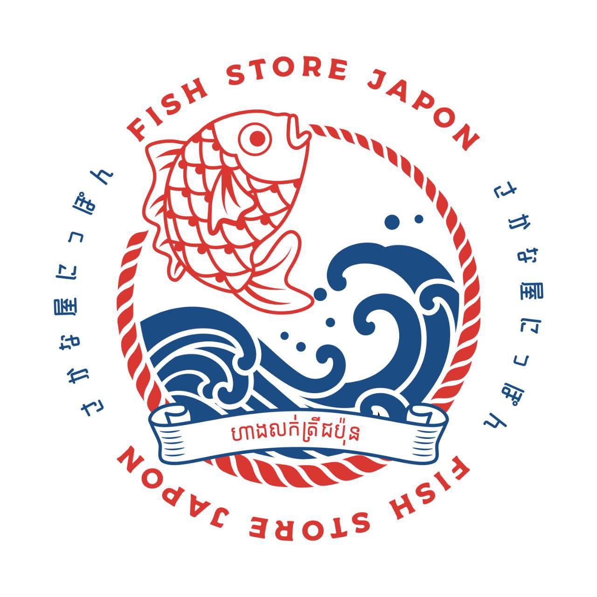

SAKANAYA JAPON
海のある日常を、カンボジアの食卓に。A Taste of the Sea, For Every Cambodian Home
A Taste of the Sea, For Every Cambodian HomeFresh seafood from Japan, in Phnom Penh

海のある日常を、カンボジアの食卓に。A Taste of the Sea, For Every Cambodian Home
A Taste of the Sea, For Every Cambodian HomeFresh seafood from Japan, in Phnom Penh